StoreFront 2411 - Configuration for Citrix Gateway
Navigation
This article applies to StoreFront versions 2411, 2402 LTSR, 2203 LTSR, 1912 LTSR, and all other versions 3.5 and newer.
- Change Log
- StoreFront Configuration for Citrix Gateway
- Single FQDN for internal and external
- Design StoreFront and Citrix Gateway for Multiple Data Centers
-
StoreFront Configuration for Multiple Data Centers
Changelog
- 2023 Dec 22 - Enable multiple site management
- 2019 Dec 5 - Internal Beacon - added link to Julian Mooren Citrix ADC – How to create a High Available Beacon Point for Citrix StoreFront
- 2019 Mar 30 - changed NetScaler Gateway to Citrix Gateway for StoreFront 1903
- 2018 Sep 2 - replaced XenApp/XenDesktop with Citrix Virtual Apps and Desktops
- 2018 Mar 13 - in the Icon Aggregation section, added link to CTA Dennis Span Citrix StoreFront Multi-Site Aggregation with PowerShell at CUGC
- 2017 Dec 2 - updated Docs links for current-release
StoreFront Configuration for Citrix Gateway
See the Citrix Gateway ICA Proxy for instructions to create a Citrix Gateway Virtual Server for ICA Proxy and StoreFront. You then must configure StoreFront to enable the Gateway.
- In the StoreFront Console, in the middle, right-click your Store, and click Manage Authentication Methods.
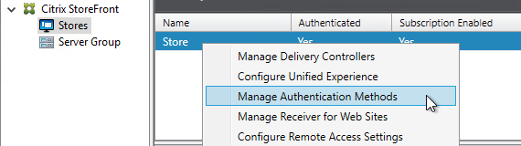
- Ensure Pass-through from Citrix Gateway is selected and click OK.
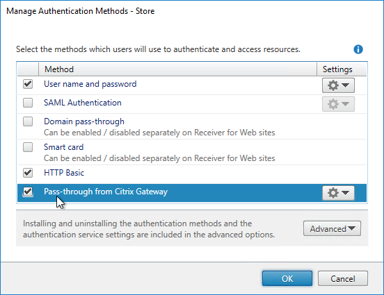
- In the StoreFront Console, right-click the Stores node, and click Manage Citrix Gateways.
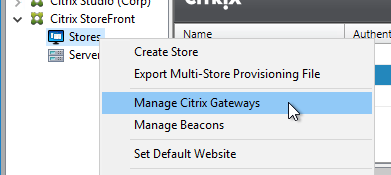
- If StoreFront 3.6 or newer, notice the imported from file link on top. This is a new feature of NetScaler 11.1 and newer. An example configuration that uses this feature can be found in the StoreFrontAuth page.
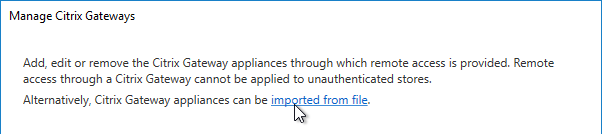
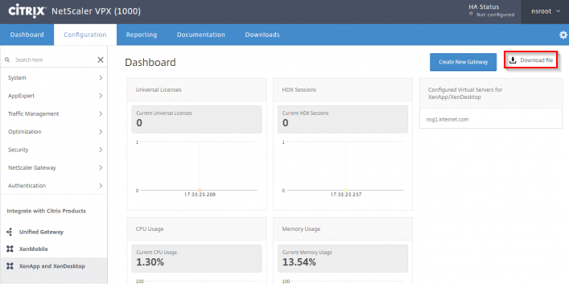
-
If you're not using the Gateway config file from NetScaler 11.1 and newer, click Add.
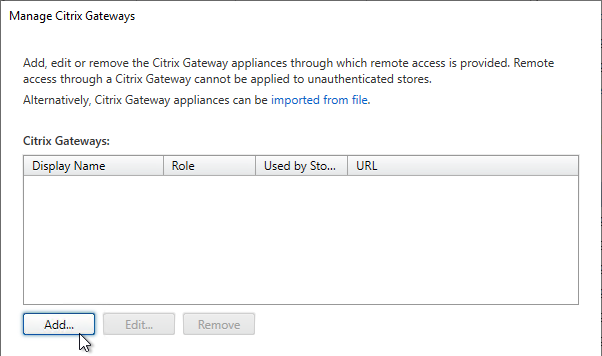
- In the General Settings page, enter a display name. This name appears in Citrix Receiver or Citrix Workspace app, so make it descriptive.
-
In the Citrix Gateway URL field, enter the Citrix Gateway Public URL that resolves to the Citrix Gateway VIP.
- The URL entered here must match what users enter into their browser address bars.
- This URL can be a GSLB-enabled DNS name.
-
The Gateway URL usually does not need to be reachable from StoreFront unless you need the Callback for SmartAccess or non-password authentication (e.g. Smart Cards or Citrix Federated Authentication Service).
- Click Next.
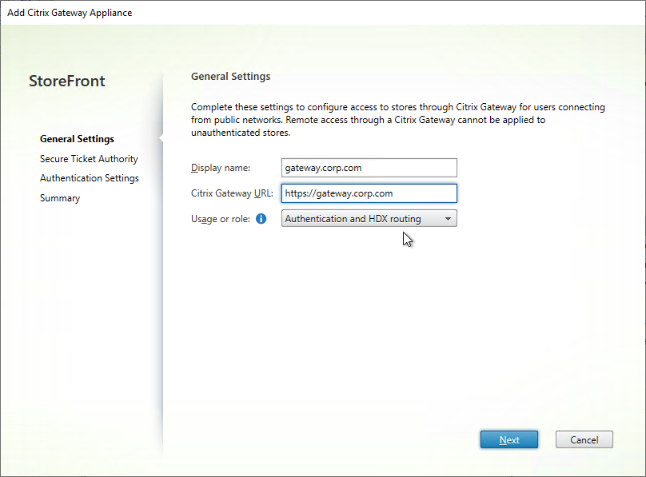
- In the Secure Ticket Authority page, click Add.
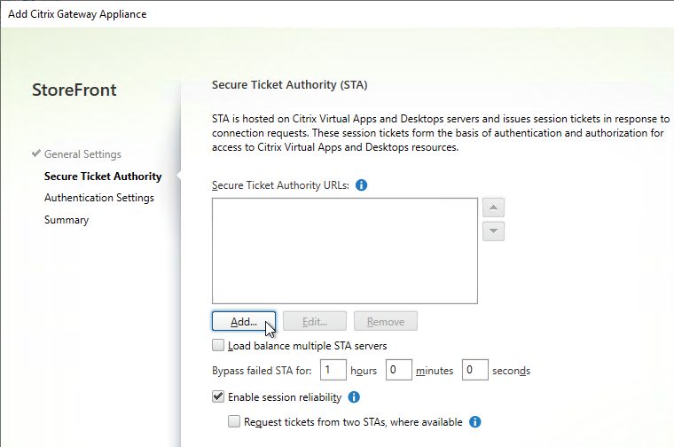
- Enter the URL to a Delivery Controller. This can be http or https.
- Click Next.
-
STA is installed automatically on Delivery Controllers.
- There is no relationship between STA and CVAD farms. Any CVAD farm can use any STA server.
-
StoreFront chooses the STA server. Citrix Gateway must be configured to use the same STA servers that StoreFront chose.
- Click OK.
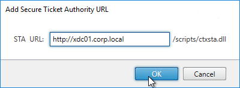
- Continue adding Secure Ticket Authorities (Delivery Controllers). Whatever Secure Ticket Authorities you add here must also be added to the Citrix Gateway Virtual Server on the Citrix ADC appliance. Click Next.
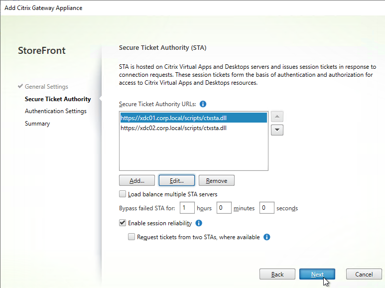
- In the Authentication Settings page, the VServer IP Address field is typically left blank. You only use this field if you have multiple Gateways (on separate appliance pairs) connecting to one StoreFront server. See below for details.
- If you need SmartAccess or non-password authentication (e.g. Smart Cards or Citrix Federated Authentication Service), then enter the Callback URL.
- Click OK.
-
The Callback URL must resolve to any Citrix Gateway VIP on the same appliance that authenticated the user. Edit the HOSTS file on the StoreFront server so the Callback URL resolves correctly.
- If you are configuring Single FQDN, then the Callback URL must be different than the Single FQDN.
- The Gateway Virtual Server that the Callback URL resolves to must have a trusted and valid certificate that matches the FQDN you are entering here.
- The Gateway Virtual Server that the Callback URL resolves to must not have client certificates set to Mandatory.
- See CTX399424 Gateway Callback and / or XML Communication fails after upgrade to Storefront 2203 for a workaround.
- If you don’t need SmartAccess or non-password authentication, then leave the Callback URL field empty.
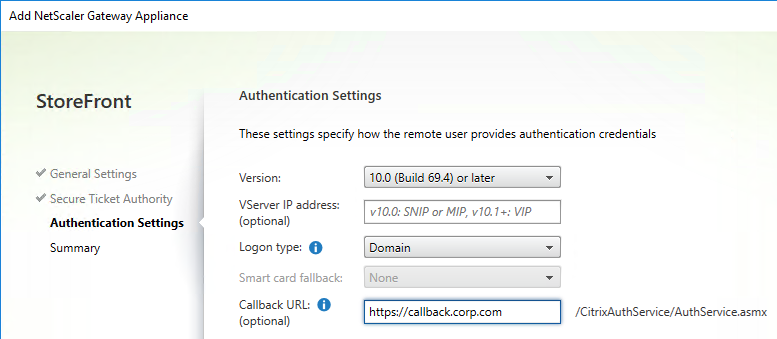
- If you enabled two-factor authentication (LDAP and RADIUS) on your Citrix Gateway, change the Logon type to Domain and security token. Otherwise leave it set to Domain only.
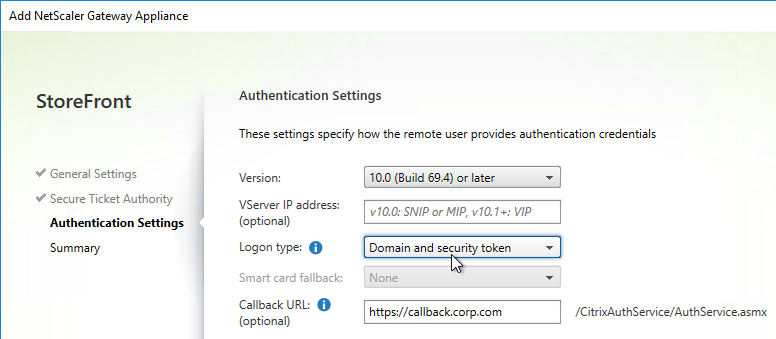
- Click Create.
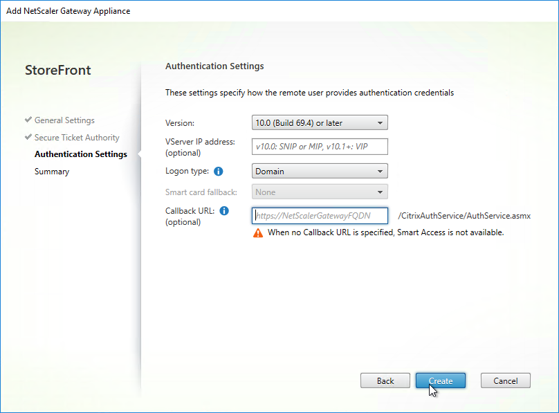
- Then click Finish.
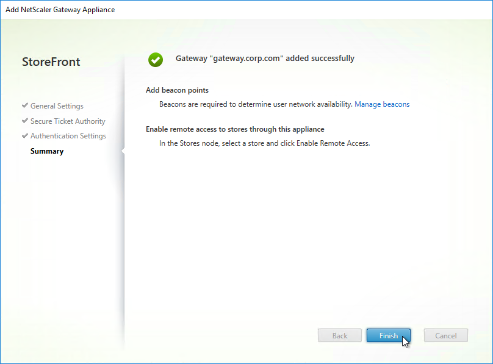
- If you don’t need SmartAccess or non-password authentication, then leave the Callback URL field empty.
- You can add more Gateways depending on your design. Multiple datacenters typically requires multiple Gateways. Click Close when done.
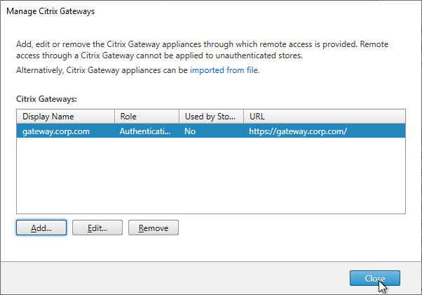
-
To enable the store to use Citrix Gateway, in the middle, right-click your store, and click Configure Remote Access Settings.
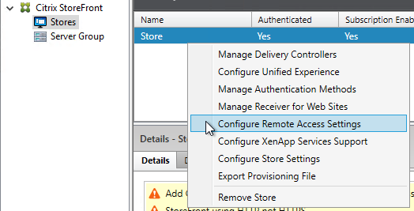
- Check the box next to Enable Remote Access.
- Leave it set to No VPN tunnel.
-
Note: if you want Receiver to automatically launch a VPN tunnel, then see CTX200664 How to Configure Receiver for Seamless Experience Through NetScaler Gateway.
- Check the box next to the Citrix Gateway object you just created. This binds the Gateway to the Store.
- If you have multiple Gateways, select one of them as the Default appliance.
-
Note: when you point Receiver to a Citrix Gateway URL for Discovery, after Discovery is complete, the Default appliance selected here is the Gateway that Receiver uses. In other words, Receiver ignores the Gateway you entered during discovery.
- Click OK to close the Configure Remote Access Settings dialog box.
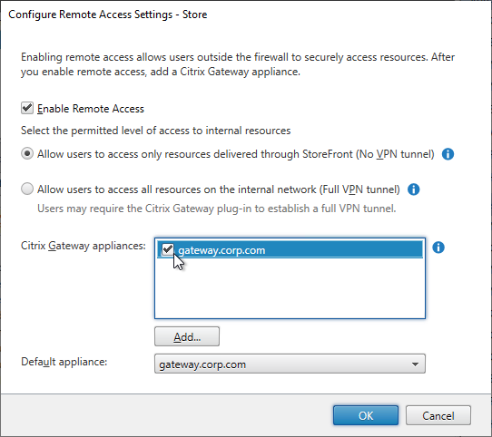
- Click OK to close the Configure Remote Access Settings dialog box.
- In the StoreFront Console, right-click the Stores node, and click Manage Beacons.
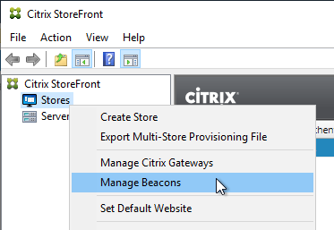
- In the top half of the window, make sure the Internal beacon is set to a URL that is only reachable internally.
-
If you are configuring Single FQDN, then the Internal beacon must be different than the Single FQDN.
- Service URL = the StoreFront Base URL. If you're not configuring Single FQDN, then the Base URL is usually not accessible externally and is acceptable as an Internal Beacon.
- The Internal beacon must never go down. If it's down, then internal native Receivers will stop working. One option is to configure a Citrix ADC Responder HTML page as detailed at Julian Mooren Citrix ADC – How to create a High Available Beacon Point for Citrix StoreFront. :idea:
- Click OK when done.
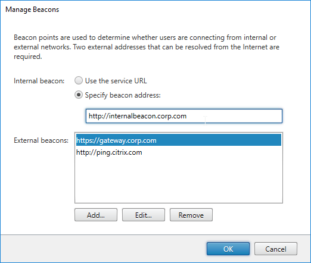
- Right-click the Server Group node, and click Propagate Changes.

Citrix Gateway Logon Page Theme
To make the Citrix Gateway logon page look like Receiver 3.0 and newer, see Citrix Gateway 12 Portal Theme. The Citrix Gateway X1 theme has the fewest issues and the most readily available documentation for customization. The Citrix Gateway RfWebUI theme has less documentation for customizations.
Single FQDN
Overview
Links:
- Citrix CTX200848 How to Configure Single Fully Qualified Domain Name for StoreFront and NetScaler Gateway
- Citrix Docs - Create a single Fully Qualified Domain Name (FQDN) to access a store internally and externally
You can either define separate FQDNs for StoreFront Load Balancing (internal) and Citrix Gateway (external). Or, you can define a Single FQDN for both.
Single FQDN has the following requirements:
-
Receivers:
- Receiver for Windows 4.2 or newer. Or upgrade to Workspace app.
- Receiver for Mac 11.9 or newer. Or upgrade to Workspace app.
- Mobile Receivers
- StoreFront 2.6 or newer
-
Split DNS – different DNS resolution for internal vs external
-
Internal DNS should resolve the Single FQDN to the StoreFront Load Balancing VIP
- External DNS should resolve the Single FQDN to the Citrix Gateway VIP (public IP)
- NetScaler 10.1 or newer
-
The FQDN for Internal Beacon must be different than the Single FQDN.
-
The Internal Beacon URL must not be externally resolvable or accessible.
- If Internal Beacon is down, then internal Receiver Self-Service clients will not function correctly.
- Internal Beacon URL can be http instead of https.
- If Internal Beacon URL is https, then the machine hosting the IP address for the Internal Beacon must have a certificate that matches the Internal Beacon FQDN.
-
The FQDN for Citrix Gateway Callback must be a different FQDN than the Single FQDN. Callback is only needed for SmartAccess and SAML.
-
Callback FQDN can resolve tot he same Gateway VIP used by external users. Or, you can create a new Gateway VIP on the same appliance that authenticated the users.
- The Gateway Virtual Server for Callback must have a certificate that matches the Callback FQDN.
DNS caching interferes with Single FQDN - Note: if you have laptops that move from internal to external and back again, then DNS caching will interfere with Single FQDN. The DNS response for Single FQDN needs to change whenever the device moves from internal to external and back again. However, Receiver uses the same DNS cache as Internet Explorer, which caches DNS responses for 30 minutes. To clear the DNS cache, you have to close Receiver and re-open it. The DNS response you see when you ping the Single FQDN does not necessarily match the DNS response used by Internet Explorer and Receiver.
Configure Single FQDN without email-based discovery
If you don’t care about email-based discovery, then the configuration of Single FQDN is fairly simple. Sample DNS names are used below. Make sure the certificates match the DNS names.
- Internal DNS name = the Single FQDN (e.g. storefront.corp.com). Internally, the DNS name resolves to the internal Load Balancing VIP for StoreFront. Set the StoreFront Base URL to this address.
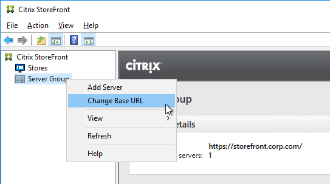
- External DNS name = the Single FQDN (e.g. storefront.corp.com). Externally, the DNS name resolves to a public IP, which is NAT’d to Citrix Gateway VIP on DMZ Citrix ADC. Set the Citrix Gateway object in StoreFront to this FQDN.
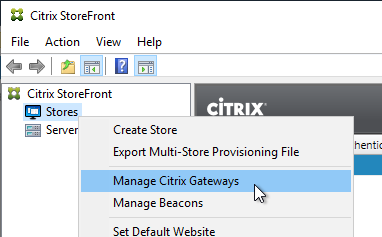
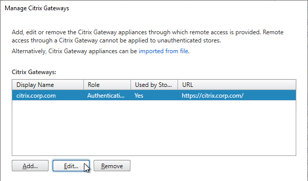
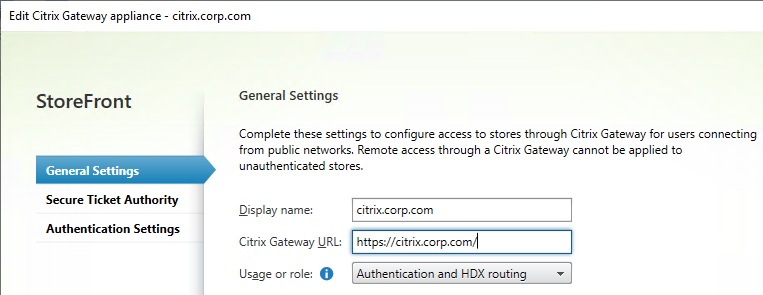
- If you need SmartAccess, then the Callback URL = any DNS name (e.g. callback.corp.com) that resolves to a Citrix Gateway VIP on the same DMZ Citrix ADC appliance that authenticated the user. The Callback URL cannot be the Single FQDN.
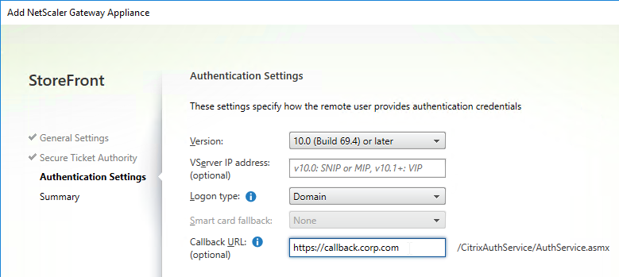
- Callback URL can be omitted if you don’t need SmartAccess features, or SAML authentication.
- The callback DNS name must be different than the Single FQDN.
- The callback DNS name must resolve to a Citrix Gateway VIP on the same appliance that authenticated the user. This could be the same DMZ Gateway VIP used by external users. Or you can create a separate internal Gateway VIP on the same appliance.
- The Citrix Gateway vServer for callback must have a certificate that matches the Callback DNS name.
- Internal Beacon = any internal website URL that is not externally accessible. You can’t use the Single FQDN as the Internal Beacon. Note: if the internal beacon is down, then internal Receiver Self-service will not work correctly.
- Make sure the Internal Beacon is not resolvable externally.
- The Internal Beacon URL cannot be the Single FQDN. It must be different.
- Ideally, the Internal Beacon should be a new DNS name that resolves to a StoreFront Load Balancing VIP.
- If the internal beacon is https, then the certificate must match the internal beacon DNS name. However, http URLs also work.
- See CTX218708 How to Configure Internal Beacon for Single FQDN on StoreFront.
- Make sure the DMZ Citrix ADC resolves the Single FQDN to the internal StoreFront Load Balancing VIP. You typically add internal DNS servers to the Citrix ADC. Or you can create a local Address Record on Citrix ADC for the Single FQDN.
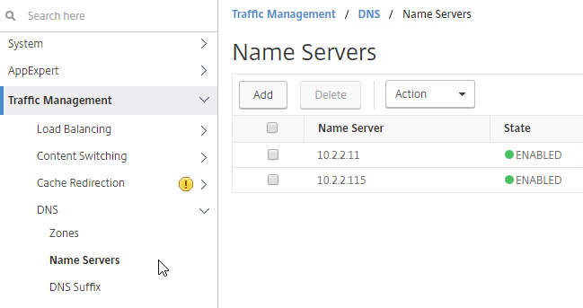
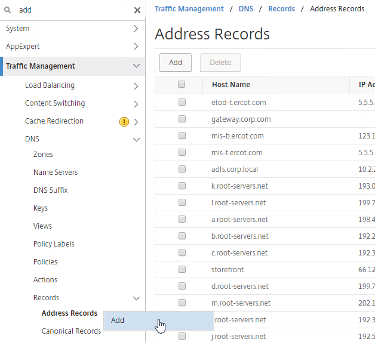
- In the Citrix Gateway Session Profiles, on the Published Applications tab, set the Web Interface Address, and the Account Services Address to the Single FQDN.
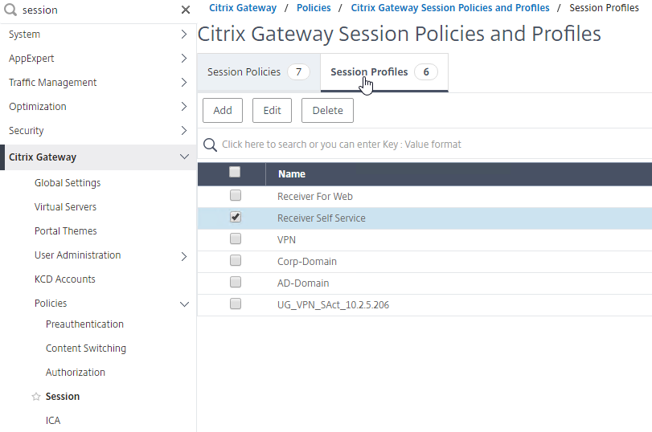
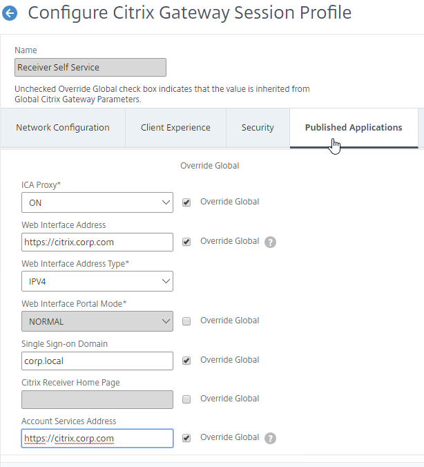
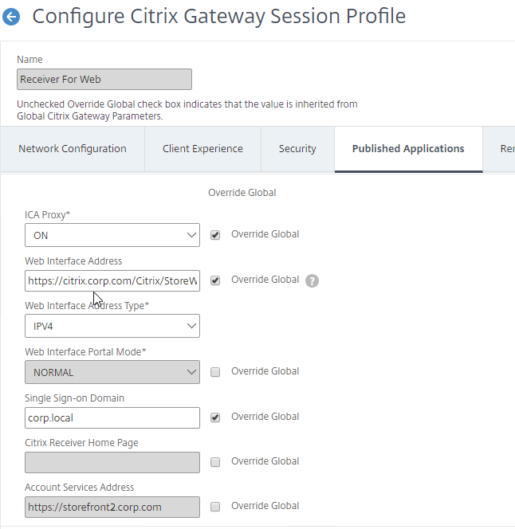
- That’s all you need to implement Single FQDN. If you made changes to an existing StoreFront deployment, then you might have to remove accounts from Receiver, and re-add the account.
If you need email-based discovery, then here’s an example configuration for ICA Proxy Citrix Gateway
DNS:
-
Sample DNS names:
- Single FQDN = citrix.corp.com
- Callback FQDN = callback.corp.com
- Internal Beacon FQDN = internalbeacon.corp.com
-
External DNS:
-
citrix.corp.com resolves to a public IP, which is NAT’d to a Citrix Gateway VIP on a DMZ Citrix ADC.
- If email-based discovery, SRV record for _citrixreceiver._tcp.email.suffix points to citrix.corp.com. Create this SRV record in every email suffix DNS zone.
-
Internal DNS:
-
citrix.corp.com resolves to the Load Balancing VIP for StoreFront
- callback.corp.com resolves to a Citrix Gateway VIP on the same Citrix ADC that authenticated the user. Usually only needed for SmartAccess and/or SAML.
- For the internal beacon, FQDN of any internal web server. Make sure this name is not resolvable externally.
- If email-based discovery, SRV record for _citrixreceiver._tcp.email.suffix points to citrix.corp.com. Create this SRV record in every email suffix DNS zone.
Certificates:
-
External, publicly-signed certificate for Citrix Gateway:
- One option is wildcard for *.corp.com. Assumes email suffix is also corp.com. If you more than one email suffix, then wildcard will not work.
-
Another option is the following Subject Alternative Names:
- citrix.corp.com
-
callback.corp.com – for callback URL. Only accessed from internal.
- Or you can create a separate internally-facing Gateway vServer for callback with a separate certificate. - If email-based discovery, discoverReceiver.email.suffix for each email suffix. If you have multiple email suffixes, you'll need multiple SAN Names.
- Internal certificate for StoreFront Load Balancing:
-
Publicly-signed certificate is recommended, especially for mobile devices and thin clients.
- Since you have the same DNS name for internal and external, you can use the external certificate for internal StoreFront.
- One option is wildcard for *.corp.com. Assumes email suffix is also corp.com. If you have more than one email suffix, then wildcard will not work.
-
Another option is the following Subject Alternative Names:
- citrix.corp.com
- If email-based discovery, discoverReceiver.email.suffix for every email suffix. If you have multiple email suffixes, then you will have multiple SAN names.
StoreFront Configuration:
- Base URL = https://citrix.corp.com
- Internal beacon = https://internalbeacon.corp.com. Make sure it’s not resolvable externally.
-
Gateway object:
- Gateway URL = https://citrix.corp.com
- Callback URL = https://callback.corp.com
Receiver for Web session policy:
- Policy expression = REQ.HTTP.HEADER User-Agent NOTCONTAINS CitrixReceiver
-
Client Experience tab:
- Clientless Access = Allow or Off
- Plug-in Type = Java
- Single Sign-on to Web Applications = checked
-
Security tab:
-
Default authorization = ALLOW
-
Published Applications tab:
-
ICA Proxy = On
- Web Interface address = https://citrix.corp.com/Citrix/StoreWeb
- Single Sign-on Domain = Corp
Receiver Self-Service session policy:
- Policy expression = REQ.HTTP.HEADER User-Agent CONTAINS CitrixReceiver
-
Client Experience tab:
- Clientless Access = Allow or Off
- Plug-in Type = Java
- Single Sign-on to Web Applications = checked
-
Security tab:
-
Default authorization = ALLOW
-
Published Applications tab:
-
ICA Proxy = On
- Web Interface address = https://citrix.corp.com
- Single Sign-on Domain = Corp
- Account Services address = https://citrix.corp.com
Multiple Datacenters / Farms
Multi-datacenter Citrix Gateway and StoreFront Design
HTTP vs ICA
There are two connections from every Citrix client:
- HTTP (SSL required) - goes to StoreFront
- HTTP is usually proxied through Citrix ADC load balancing
- If external, HTTP is proxied through Citrix Gateway, which proxies it through Citrix ADC load balancing.
- HTTP traffic is initiated by either a web browser, or by Receiver Self-Service
- ICA (SSL optional) - goes to Virtual Delivery Agent
- ICA can go direct (internal) to a VDA
- Or ICA can be proxied through Citrix Gateway ICA Proxy
- ICA traffic is handled by Workspace app's ICA engine - either locally installed Workspace app, or HTML5 Workspace app
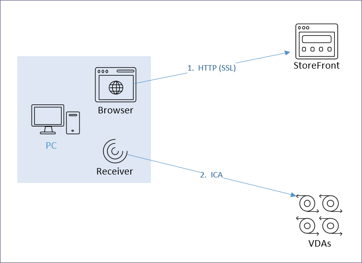
The FQDN for the HTTP connection can be the same or different than the FQDN for the ICA connection.
The HTTP connection is easily handled by GSLB, HTTP/SSL load balancing, etc.
-
DNS name - Users connect to a DNS name that resolves to StoreFront and/or Citrix Gateway.
- StoreFront is usually proxied through Citrix ADC Load Balancing.
- If Citrix Gateway, the HTTP connection is proxied to StoreFront, usually through Load Balancing.
- Separate VIP per datacenter - For multiple datacenters, each datacenter has its own StoreFront and/or Citrix Gateway VIP.
-
GSLB resolves the DNS name to one of the datacenter VIPs.
-
This can be active/active, or active/passive.
-
Proximity and persistence - For active/active, since StoreFront traffic (HTTP) is so minimal, it usually doesn't matter which datacenter is selected. But you can optionally enable one of the Proximity GSLB load balancing algorithms so the closest datacenter is selected.
-
Enable one of the GSLB Service cookie-based persistence methods. Connection Proxy is the easiest to configure.
The ICA connection is dictated by StoreFront.
-
.ica file - When a user clicks an icon in StoreFront, StoreFront generates an .ica file containing an address.
- If the user is internal, then the .ica file usually contains the private IP address of the Virtual Delivery Agent. Receiver connects directly to the VDA's private IP.
- If the user is connecting through Citrix Gateway, or if HDX Optimal Routing is enabled, then the .ica file usually contains the FQDN of a Citrix Gateway that can proxy the ICA connection.
- Receiver engine for ICA protocol - The StoreFront provided .ica file is given to a Receiver engine. Receiver engine (locally installed Receiver, or HTML5 Receiver), uses ICA protocol to connect to the address contained inside the .ica file.
- One public IP - For external users, an advantage of Citrix Gateway is that you only have to expose one public IP address per datacenter no matter how many VDAs you have.
-
FQDN for Gateway - For Citrix Gateway, StoreFront inserts a FQDN into the .ica file. This FQDN can be one of the following:
-
Active/active GSLB
- Datacenter-specific - If you have two datacenters, each datacenter has a unique FQDN that resolves to a specific Citrix Gateway VIP in a specific datacenter. GSLB active/passive handles failover if the datacenter-specific VIP is down.
-
ICA Routing - ICA traffic is heavier and more latency sensitive than StoreFront. Thus you typically want to control which datacenter is used for the ICA connection. There are two common designs:
-
Proxy ICA traffic through a Citrix Gateway that's in the same datacenter as the VDA.
- Proxy ICA traffic through the Citrix Gateway that's closest to the user. The idea here is that back haul WAN connections are faster than Internet connection to a remote datacenter.
-
HDX Optimal Routing - For proxying ICA through Citrix Gateway in the same datacenter as the VDA, StoreFront has two methods for identifying the Citrix Gateway that's closest to the VDA:
-
Different Citrix Virtual Apps and Desktops site/farm in each datacenter. If a VDA is launched from a particular site/farm, then provide the Citrix Gateway FQDN that is associated with that site/farm. This is configured using HDX Optimal Routing.
- Different Citrix Virtual Apps and Desktops zone per datacenter. If the VDA is launched from a particular zone, then provide the Citrix Gateway FQDN that is associated with that zone. This is configured using HDX Optimal Routing.
-
Proximity and Persistence - For proxying ICA through a Citrix Gateway that is closest to the user, StoreFront returns an FQDN that is GSLB Active/Active load balanced using a Proximity load balancing algorithm.
-
ICA is usually a long-lived TCP connection to the Citrix Gateway VIP.
- You can enable Source IP persistence on the active/active GSLB Virtual Server.
- Another method of proximity load balancing ICA is to configure Citrix ADC to insert a header to StoreFront indicating the Citrix Virtual Apps and Desktops zone the user is connecting from. See the GSLB Powered Zone Preference whitepaper.
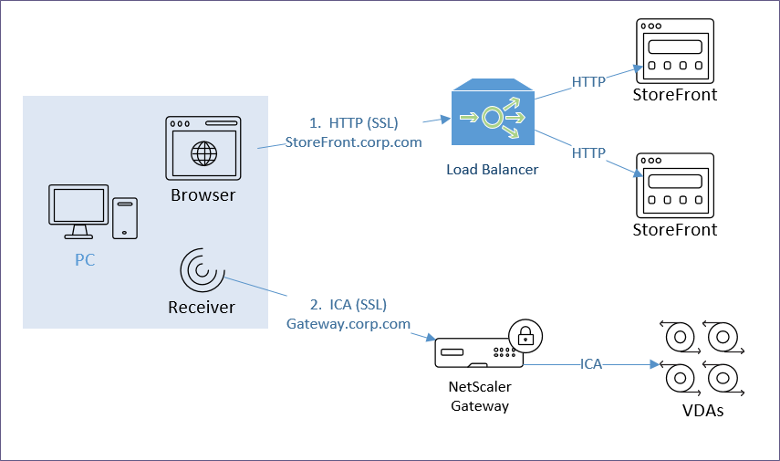
Internal Citrix Gateway ICA Proxy? - Internal users typically have direct connectivity to VDA Private IP addresses, so you usually don't need to use Citrix Gateway ICA Proxy internally. However, an advantage of using Citrix Gateway ICA Proxy internally is that now all ICA traffic is going through a Citrix Gateway, which makes it easy to enable AppFlow (HDX Insight) reporting to Citrix Application Delivery Management (ADM).
- ICA Proxy through Citrix Gateway wraps ICA traffic in SSL, increasing the packet size.
- SSL-Encrypted ICA packets cannot be optimized by normal WAN optimization products.
StoreFront and Multiple Sites/Farms
A Citrix Virtual Apps and Desktops Site/Farm is a collection of Delivery Controllers that share a single Site SQL Database. Multiple Citrix Virtual Apps and Desktops Sites/Farms implies multiple Site SQL databases, each configured separately. Note: farm is the old name for Citrix Virtual Apps and Desktops Site.
- If you stretch a single Citrix Virtual Apps and Desktops Site/Farm across datacenters, then you have to deal with replication and recovery of the single SQL database.
- Citrix Virtual Apps and Desktops Zones and Local Host Cache make it more feasible to stretch a farm. See XenDesktop Site Failover - how do you do it? at CUGC for an excellent discussion on multi-datacenter zone design.
- VDAs can only register with one Citrix Virtual Apps and Desktops Site/farm.
Multiple Citrix Virtual Apps and Desktops Sites/Farms - StoreFront can enumerate icons from multiple Citrix Virtual Apps and Desktops Sites/Farms. If there are identical icons in multiple farms, then the icons can be aggregated so that only a single icon is displayed to the user. When the user clicks the icon, StoreFront then needs to select a site/farm.
- CVAD 2311 and newer have multiple site management in Web Studio in the Settings node.


- Use the Site selector at the top right of the page.

- Use the Site selector at the top right of the page.
- In StoreFront, Sites/Farms can be prioritized (active/passive) for different Active Directory groups. This allows you to specify a "home" site for specific users. Typically, you set the preferred site/farm to be in the same datacenter that contains the user's home directory and roaming profile.
- Or sites/farms can be active/active load balanced. This works best for applications that have synchronized active/active back-end data.
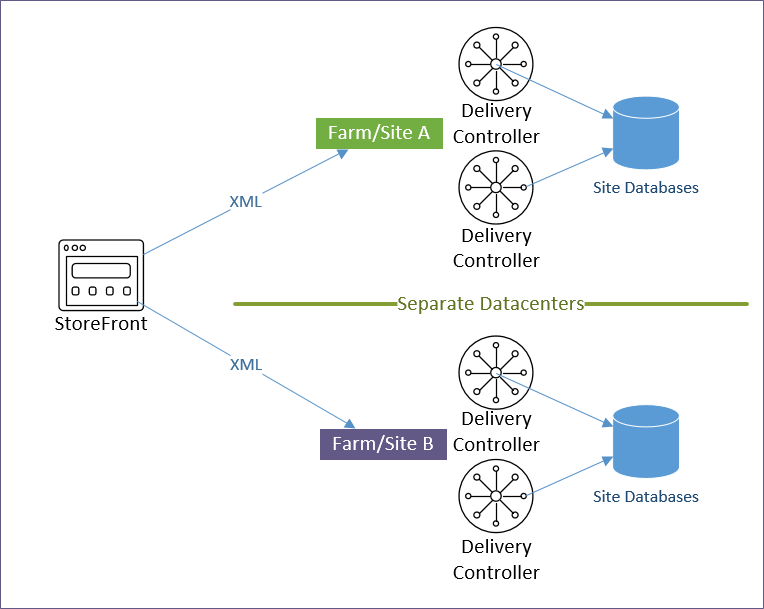
Icon aggregation - There are two methods of configuring icon aggregation in StoreFront:
- StoreFront Console GUI - The most common multi-site/farm configurations can be done in the StoreFront Console GUI, including configuration of “Home Sites” (different AD groups prioritizing different sites/farms).
- XML files – for more complex multi-site configurations. See Citrix Docs – Set up highly available multi-site store configurations
Note: if you have existing subscriptions/favorites, then enabling icon aggregation will cause the existing subscriptions to be ignored. You can migrate the existing subscriptions by exporting, modifying, and importing. See Subscriptions Missing after Enabling Aggregation at Citrix Discussions.
StoreFront in Multiple Datacenters
Stretching - Citrix does not support stretching a single StoreFront Server Group across multiple datacenters. Each datacenter is expected be a different StoreFront Server Group.
- Citrix provides scaling guidance for up to 6 servers in a single StoreFront Server Group.
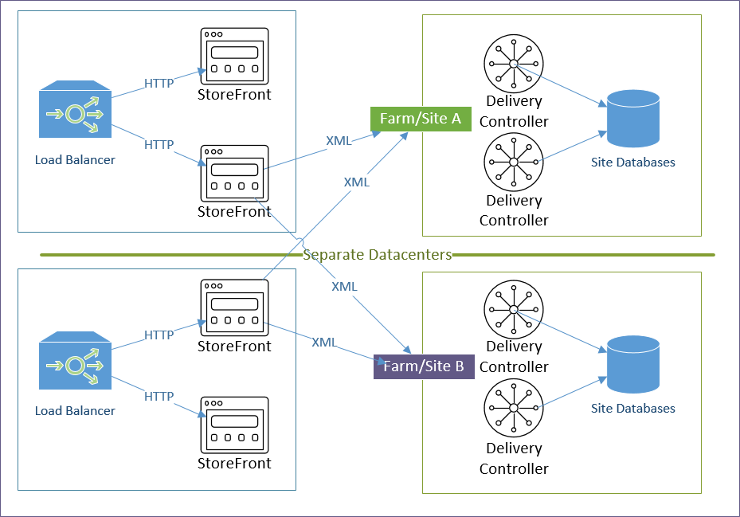
Management - Each StoreFront Server Group is managed separately.
- Subscriptions/Favorites can be replicated between the two StoreFront Sever Groups.
Receiver Roaming - When Citrix Receiver switches between different StoreFront Server Groups in multiple datacenters, it’s possible for each datacenter to be treated as a separate Store, causing multiple Store entries in Receiver. This can be prevented by ensuring the following configurations are identical in both datacenters. Source = Juan Zevallos at Citrix Discussions:
- Match the SRID - in StoreFront, if you use the same Base URL in the 2 separate installations, then the SRID should end up being identical. If the Base URL is changed after the initial setup, the SRID doesn't change. The SRID can be safely edited in the \inetpub\wwwroot\Citrix\Roaming\web.config file. It will be replicated into the discovery servicerecord entry in the Store web.config, which can be edited as well, or refreshed from the admin console by going into Remote Access setup for the store, and hitting OK. Make sure to propagate changes to other servers in the group.
- Match the Base URL
- Match the Delivery Controller names under "Manage Delivery Controllers" - The XML brokers can be different, but the actual name of the Delivery Controller/Farms must be identical.
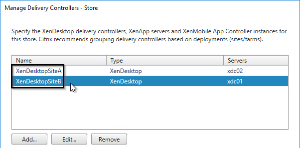
Typical Multi-Datacenter Configuration
Here's a typical active/active Citrix Virtual Apps and Desktops configuration using separate sites/farms in each datacenter. Another option is zones.
-
Citrix Virtual Apps and Desktops Sites/Farms: Separate Citrix Virtual Apps and Desktops sites/farms in each datacenter.
- The Delivery Controllers for each site/farm point to a SQL database in the local datacenter. There usually is no need to enable SQL failover across datacenters.
- Each datacenter is managed separately. But Citrix Policies in a GPO can apply to both sites/farms.
- An advantage of separate sites/farms is that you can upgrade one datacenter before upgrading the other.
-
StoreFront Server Groups: Separate StoreFront Server Groups in each datacenter.
-
Citrix doesn't support stretching a single StoreFront Server Group across a WAN link.
- Each Server Group is configured identically. You can export the config from one Server Group, and import it to the other. Or configure each of them separately, but identically. Identical means: same Base URL, same farms (Manage Delivery Controllers), same SRID, same Gateways, and same Beacons.
- If subscriptions/favorites are enabled, use PowerShell commands to configure subscription replication between the two Server Groups.
-
StoreFront Load Balancing: Separate StoreFront load balancing VIP in each datacenter
-
Each Load Balancing VIP can be active/passive. Active = the StoreFront servers in the local datacenter. Passive = the StoreFront servers in the remote datacenter.
- Create two Load Balancing vServers: one for local StoreFront, one for remote StoreFront. In the Active (local) Load Balancing vServer, add the Protection section, and configure the Backup (remote) vServer.
- When the active StoreFront is down, Citrix Gateway will use StoreFront in the remote datacenter. However, the remote datacenter has its own Citrix Gateway, thus there will be two different Citrix Gateways connecting to one StoreFront Server Group. If you use SmartAccess or SAML and need the Callback URL, then you'll need a special StoreFront configuration to handle the Callback URL from multiple Gateway appliances.
- Icon aggregation: Configure StoreFront to aggregate icons from the two farms.
- Use AD groups to specify a user's home datacenter, which contains the user's roaming profile and home directory.
- Configure farm priority based on AD groups. For an aggregated icon, the AD group and farm priority determines which farm the icon is launched from.
- External Citrix Gateways: Externally-accessible Citrix Gateway ICA Proxy VIPs in both datacenters.
-
The main Citrix Gateway DNS name is active/active GSLB. For example: citrix.company.com)
- Each datacenter has a datacenter-specific GSLB active/passive DNS name for Citrix Gateway. For example: citrix-a.company.com, and citrix-b.company.com
- The Gateway SSL certificate needs to match all three DNS names: the main active/active DNS name, and the two datacenter-specific active/passive DNS names.
-
Internal Citrix Gateways: Internally-accessible Citrix Gateway ICA Proxy VIPs in both datacenters for AppFlow reporting.
-
For AppFlow/Insight reporting, Citrix Gateway ICA Proxy is typically used internally too. If you don't need AppFlow, then you don't need internal Citrix Gateway.
-
To handle Single Sign-on from Receiver, internal Receivers will connect HTTP directly to StoreFront Load Balancing instead of proxied through Citrix Gateway.
-
This implies that you have separate DNS names for StoreFront and Citrix Gateway.
- HDX Optimal Routing will force the ICA connection to go through Citrix Gateway instead of directly to the VDA.
- HDX Optimal Routing is a global setting that applies to both internal and external users. The DNS name used by HDX Optimal Routing must be valid for both internal and external. If this is not the case, then you can deploy separate StoreFront servers for internal and external.
- DNS:
-
The main Citrix Gateway DNS name is active/active GSLB. For example: citrix.company.com.
- Each datacenter has a datacenter-specific GSLB active/passive DNS name for Citrix Gateway. For example: citrix-a.company.com, and citrix-b.company.com
- The Gateway SSL certificate needs to match all three DNS names - the main active/active DNS name, and the two datacenter-specific active/passive DNS names.
- Main StoreFront and Gateway FQDNs: separate FQDNs for StoreFront and Citrix Gateway.
-
-
Externally, citrix.company.com resolves to a Citrix Gateway VIP.
- Internally, storefront.company.com resolves to a StoreFront Load balancing VIP.
- Single FQDN usually causes more problems than it's worth. If you don't do Single FQDN, then you can hide the StoreFront DNS name by pushing the store configuration to Receiver using Group Policy. Browser users would only need to know the Citrix Gateway DNS name.
-
DNS Delegation for GSLB: multiple DNS names are delegated from internal DNS and public DNS to Citrix ADNS (internal and external) for GSLB.
-
Internal GSLB and public GSLB need to resolve citrix.company.com differently. Public GSLB should resolve it to public IPs. Internal GSLB should resolve it to internal IPs.
- Combining internal and public GSLB on the same Citrix ADC is not recommended. Public GSLB should be handled by DMZ Citrix ADC appliances. Internal GSLB should be handled by Internal Citrix ADC appliances.
- If you only have one Citrix ADC appliance for both internal and public, then see One appliance resolving a single DNS name differently for internal and public at GSLB Planning.
- citrix.company.com is configured as Active/Active GSLB with Proximity Load Balancing, and Site Persistence equal or greater than StoreFront RfWeb timeout.
- citrix-a.company.com is configured as Active/Passive GSLB with Datacenter A as the Active service.
- citrix-b.company.com is configured as Active/Passive GSLB with Datacenter B as the Active service.
- storefront.company.com is configured as Active/Active GSLB with Proximity Load Balancing, and Site Persistence equal or greater than StoreFront RfWeb timeout.
-
HDX Optimal Routing: Use HDX Optimal Routing to route ICA traffic through the Citrix Gateway that is closest to the destination farm. This requires datacenter-specific DNS names (e.g. citrix-a.company.com, citrix-b.company.com)
-
You can use one of these DNS names to connect to StoreFront in a specific datacenter, which is helpful for testing.
- STAs: each StoreFront Server Group uses STAs in the local datacenter. Since ICA Traffic could end up on either Citrix ADC, all STAs must be added to all Citrix Gateways.
- Beacons: the internal beacon is critical. If the internal beacon is down then Receiver Self-service won't be able to determine if the client device is internal or not. GSLB can be used for the internal beacon DNS name.
- Roaming Profiles: If you are running Citrix Virtual Apps and Desktops in multiple datacenters, you must design roaming profiles and home directories correctly.
Icon Aggregation and Home Sites
To configure icon aggregation using PowerShell, see CTA Dennis Span at Citrix StoreFront Multi-Site Aggregation with PowerShell at CUGC. The PowerShell cmdlets include the following:
- New-STFEquivalentFarmset
- Add-STFUserFarmMapping
To configure icon aggregation using the StoreFront Console:
- In StoreFront Console, go to Stores.
- In the middle, right-click your Store, and click Manage Delivery Controllers.
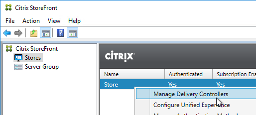
- Add multiple sites/farms. Typically, each datacenter is a separate farm.
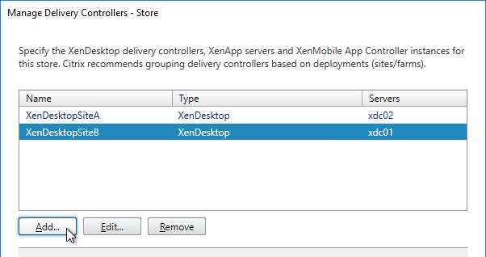
- After adding multiple farms, the Configure button becomes available. Click it.
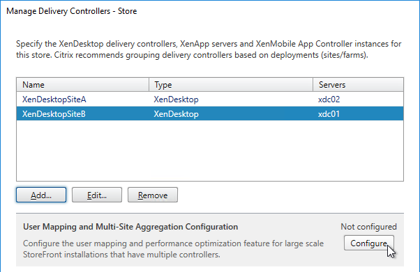
- If you are publishing identical resources from multiple farms, click the link to Aggregate resources.
-
In the Aggregate Resources dialog box, do the following:
- Select the farms with identical resources that you want to aggregate.
- Notice the checkboxes on the bottom. If your goal is to configure home sites, then make sure you uncheck Load balance resources across controllers.
- Click the Aggregate button to move them up to the Aggregated section.
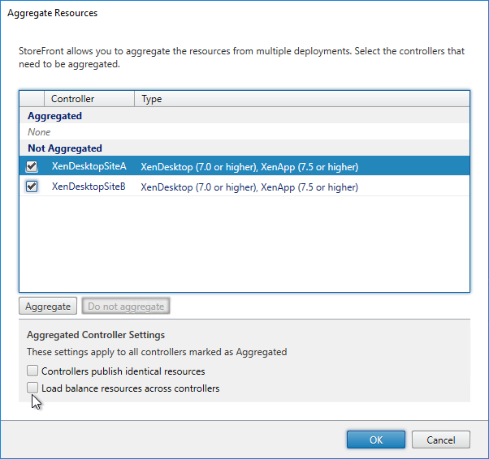
- Note: if you have existing subscriptions/favorites, then enabling icon aggregation will cause the existing subscriptions to be ignored. You can migrate the existing subscriptions/favorites by exporting, modifying, and importing. See Subscriptions Missing after Enabling Aggregation at Citrix Discussions.
- Click OK when done.
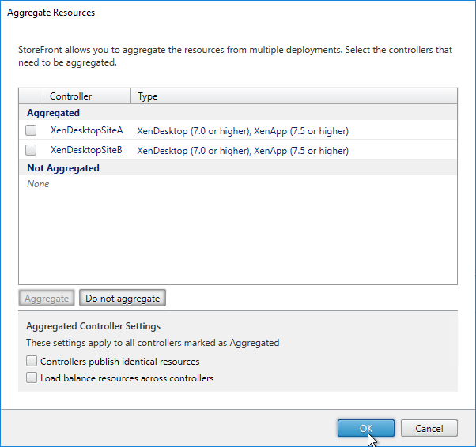
- Back in the Configure User Mapping and Multi-Site Aggregation window, click Map users to controllers.
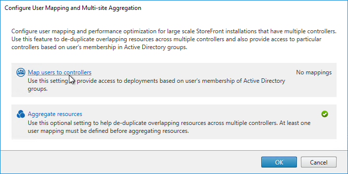
-
In the Create User Mapping wizard, do the following:
-
If you want the same farm failover order (active/passive) or farm load balancing settings for everyone, then leave the User Groups page set to Everyone. Or if you intend to have different home sites for different users, add a user group that contains the users that will be homed to a particular datacenter. You can run this wizard multiple times to specify different home sites for different user groups. Click Next.
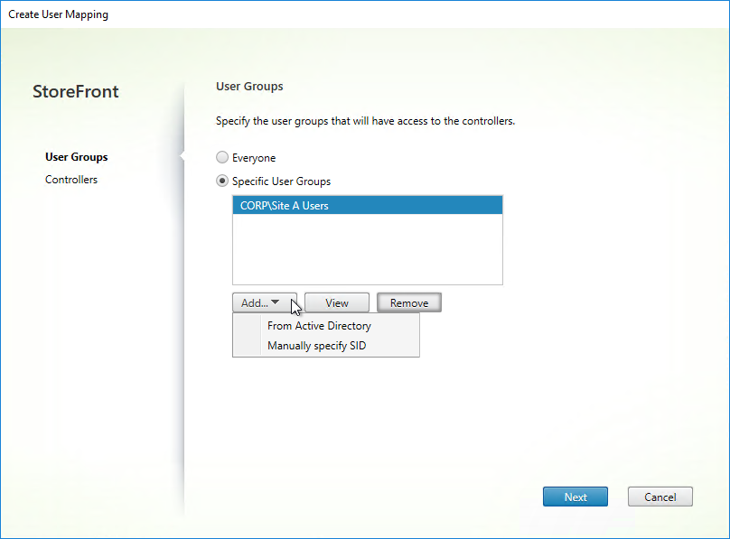
- In the Controllers page, click Add.
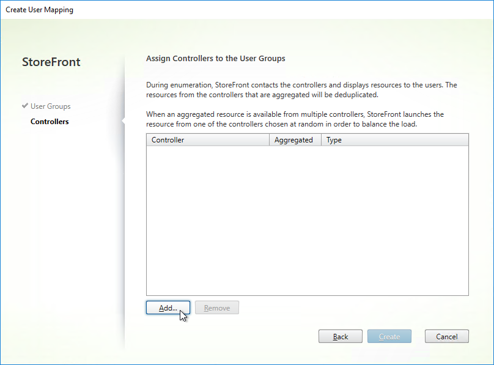
- Select the farms that these users will have access to, and click OK.
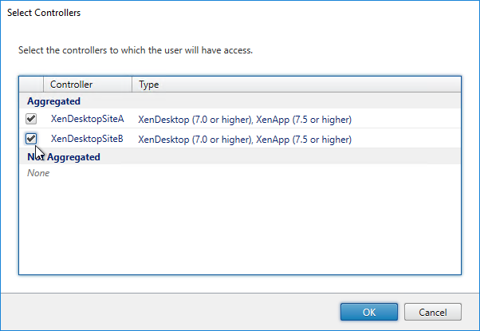
- If you configured farm aggregation without load balancing, then use the up and down arrow buttons to put the active site/farm for this group of users on top. The lower priority sites will only be accessed if the primary site is down. You can run this wizard multiple times to specify different active sites for different users.
- If farm aggregation is configured for load balancing, then there are no arrows to prioritize the farms.
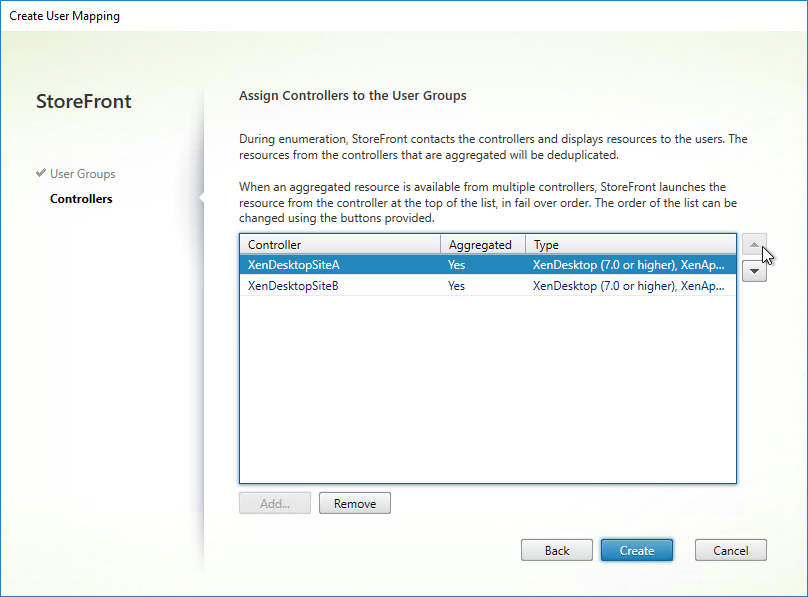
- Click Create.
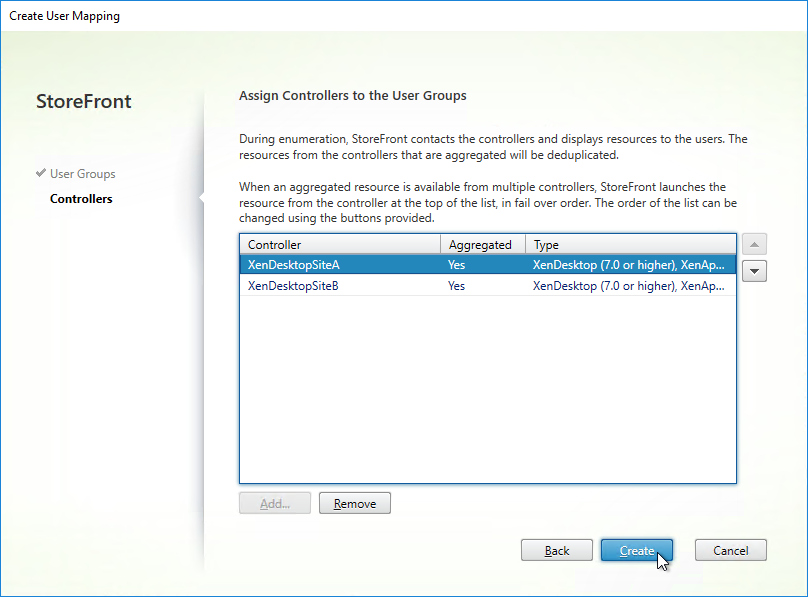
- You can click Add to add more user mappings. If you add multiple user groups, you can assign different primary sites/farms to each Active Directory group. This is how you configure “home sites”. Click OK twice when done.
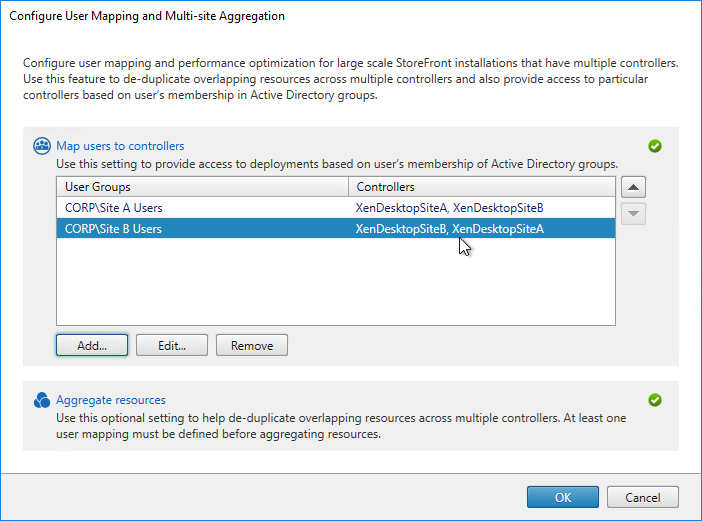
Shaun Ritchie Citrix StoreFront High Availability and Aggregation – A dual site Active Active design has a sample multi-site configuration using XML Notepad and explains how to use the Primary and Secondary keywords to override farm priority order.
Citrix Blogs StoreFront Multi-Site Settings: Some Examples has example XML configurations for various multi-datacenter Load Balancing and failover scenarios.
HDX Optimal Routing
The Optimal Gateway feature lets you control the Citrix Gateway used for ICA connections. Here are some scenarios where this would be useful:
-
Multi-site Load Balancing. If the icon selected by the user is published from Citrix Virtual Apps and Desktops in Datacenter A, then you probably want the ICA connection to go through a Citrix Gateway Virtual Server in Datacenter A.
- If the main DNS name for accessing Citrix Gateway is GSLB load balanced across datacenters, then you need additional datacenter-specific DNS names so you can control which datacenter the ICA connection goes through.
- Note: Optimal Gateway is configured at the farm/site level, or zone level.
- Citrix Gateway for internal connections (AppFlow). If you want to force internal ICA connections to go through Citrix Gateway so AppFlow data can be sent to Citrix Application Delivery Management (ADM), then you can do that using HDX Optimal Gateway, even if the user originally connected directly to the StoreFront server. See CTX200129 How to Force Connections through NetScaler Gateway Using Optimal Gateways Feature of StoreFront for more information.
- The Citrix Gateway Virtual Server requires user certificates. If ICA traffic goes through a Citrix Gateway Virtual Server that requires user certificates (e.g. Smart Card), then each session launch will result in a PIN prompt. To prevent these extra prompts, build a separate Citrix Gateway Virtual Server that doesn’t have user certificates as Mandatory. Use Optimal Gateway to force ICA connections through the other Citrix Gateway Virtual Server. Note: SmartAccess Callback URL also cannot use a Citrix Gateway Virtual Server where client certificates are set to Mandatory, so the extra Citrix Gateway Virtual Server would be useful for that scenario too.
HDX Optimal Gateway can be configured in the StoreFront Console:
- Right-click the Stores node, and click Manage Citrix Gateways.
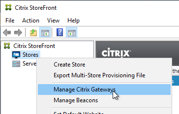
- Add more Citrix Gateways: one for each datacenter.
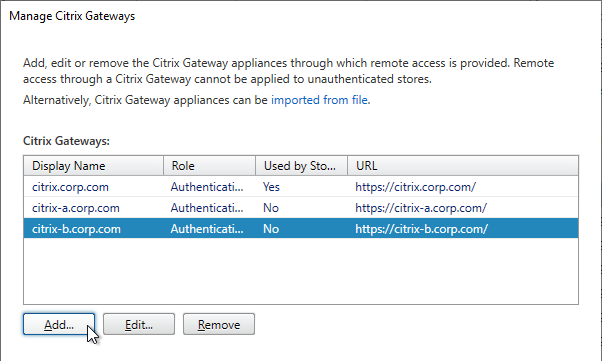
-
When adding a Gateway, you can designate a Usage or role.
- The Gateway accessed through the active/active GSLB DNS name must be set to Authentication and HDX routing.
- The Gateways for Optimal Routing could be set to HDX routing only. Or if test users will use these datacenter-specific DNS names to connect to Gateways in specific datacenters, leave them set to Authentication and HDX routing. There's no harm in leaving all of the Gateways set to Authentication and HDX routing.
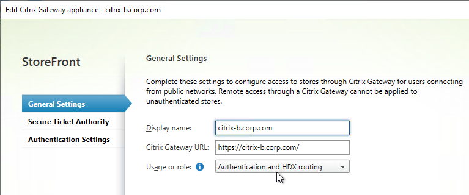
- Go to Stores, right-click your store in the middle pane, and click Configure Store Settings.
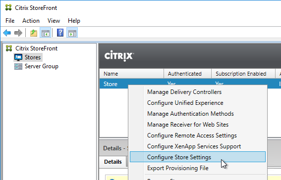
- Go to the Optimal HDX Routing page.
- Highlight one of the datacenter-specific Gateways, and click Manage Delivery Controllers.
- Select the farms that should use this gateway, and click OK.
- Repeat for the other datacenter-specific Gateways.
- The Gateway for the active/active GSLB-enabled DNS name doesn’t need any farms associated with it.
- If you want to use Citrix Gateway internally for AppFlow reporting, then uncheck the External only checkbox.
- Another option for Optimal Gateway selection is zones. In XenApp/XenDesktop 7.7 and newer and Citrix Virtual Apps and Desktops, you can stretch a farm across datacenters (zones), and use a different Gateway for each zone. Highlight a Gateway. Click Manage Zones, and add the zone name. This assumes the zone name has also been specified in the Manage Delivery Controllers dialog box > Advanced Settings.
- Click OK when done.
- In summary, users will connect to the active/active GSLB-enabled Gateway and login. After clicking an icon, HDX will be routed through one of the datacenter-specific Gateways based on the farm the icon was launched from.
Multiple Gateways (GSLB) to One StoreFront Server Group
This section applies to SmartAccess, or SAML, and the Callback URL. If you don't need the Callback URL for SmartAccess or SAML, then skip this section.
The Callback URL must go to the same Citrix ADC appliance that authenticated the user. If you have multiple Citrix ADC appliance pairs communicating with a single StoreFront server, then StoreFront needs to identify which Citrix ADC appliance pair the request came from, so it can perform a callback to that particular appliance pair.
If each of the Citrix Gateways uses the same DNS name (e.g. GSLB), then you can't use the DNS name to distinguish one appliance from the other. Instead, StoreFront can use the Gateway VIP to distinguish appliances so the callback goes to the correct appliance.
- Create datacenter-specific callback DNS names. For example: callback-a.corp.com and callback-b.corp.com.
-
The datacenter-specific callback DNS name must match the certificate on the Citrix Gateway Virtual Server that is handling the callback. Here are some options to handle the certificate requirement:
- On the main Citrix Gateway Virtual Server, assign a wildcard certificate that matches both the GSLB name, and the datacenter-specific callback name.
- On the main Citrix Gateway Virtual Server, assign an SSL certificate with Subject Alternative Names for both the GSLB name, and the datacenter-specific callback name.
- Create an additional Citrix Gateway Virtual Server on the appliance. Bind a certificate that matches the datacenter-specific callback name.
- In the StoreFront console, create multiple Citrix Gateway appliances, one for each datacenter.
- Give each of the gateway objects unique Display names. You can't have two Gateway objects with the same display name.
- Enter the same Citrix Gateway URL in all of the gateway appliances.
-
In the Authentication Settings page, in the VServer IP address field, enter the Gateway VIP for this particular appliance pair. StoreFront will use this VIP to distinguish one Citrix ADC appliance from another.
-
When users use HTTP to connect to a Citrix Gateway for authentication and icon enumeration, when Citrix Gateway communicates with StoreFront, Citrix Gateway inserts its VIP into a HTTP Header field named X-Citrix-Via-VIP. StoreFront reads this VIP header, and compares it to the Gateway objects bound to the Store. If there's a match, StoreFront uses the Callback URL configured for that Gateway object.
- The callback URL must be unique for each Citrix ADC appliance pair (e.g. callback-a.corp.com). The callback URL must resolve to a Citrix Gateway VIP on the same appliance pair that authenticated the user.
- When enabling Remote Access on the store, select both Gateway appliances. Select one as the default appliance. It shouldn't matter which one is default.